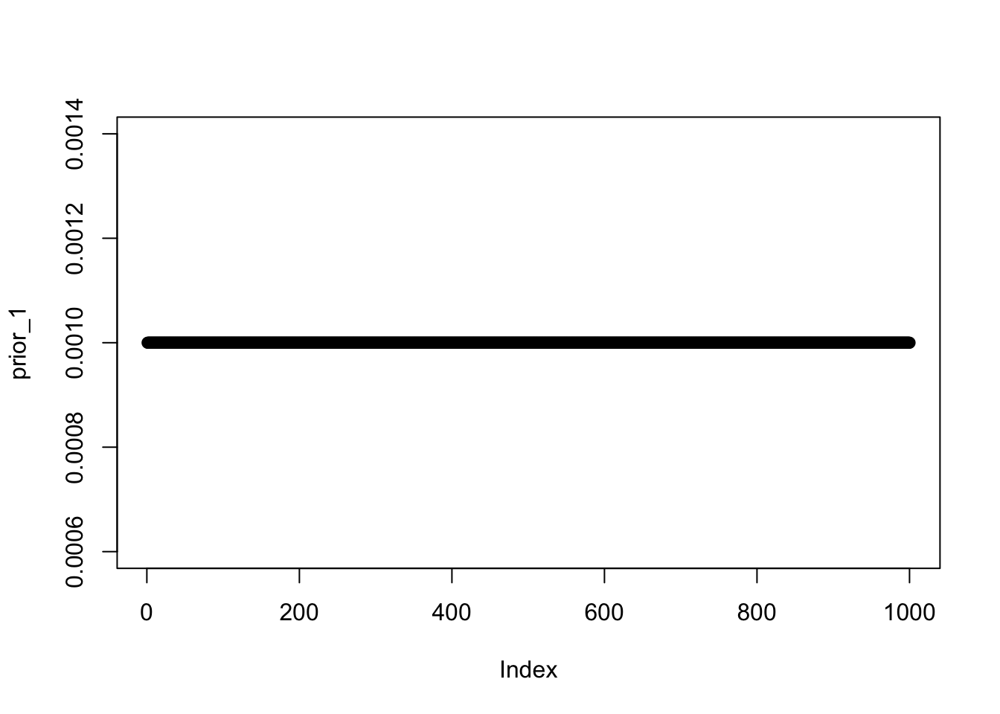
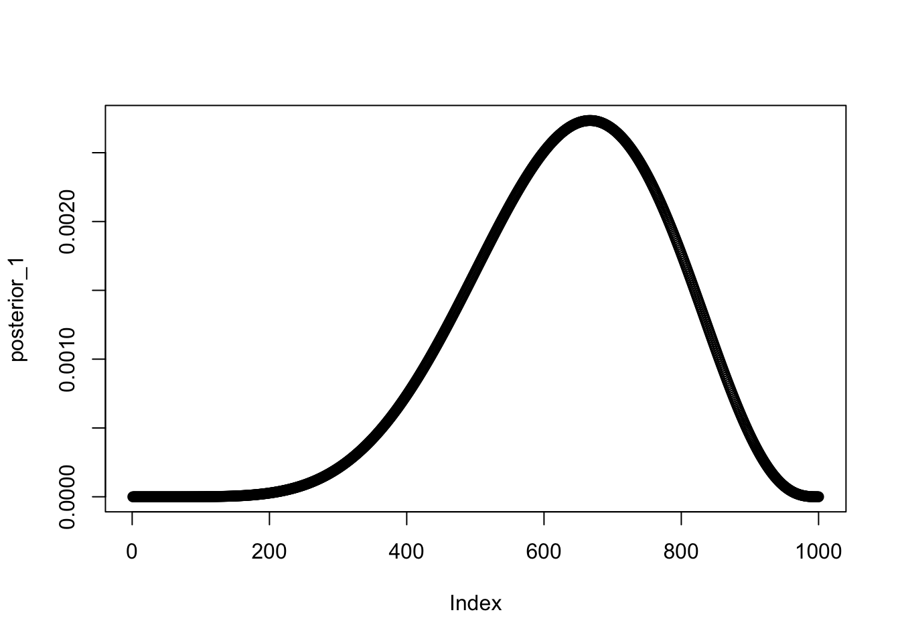
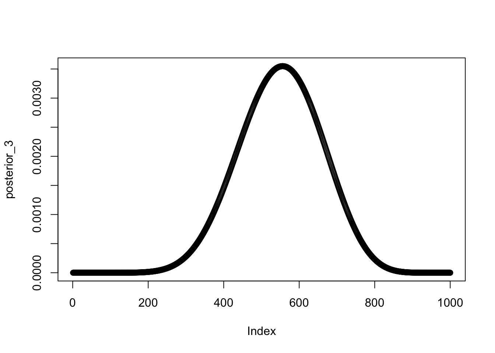

posterior_2 posterior_3
[1,] 0.000000e+00 0.000000e+00
[2,] 8.338945e-28 8.338945e-28
[3,] 8.470870e-25 8.470870e-25
[4,] 4.845672e-23 4.845672e-23
[5,] 8.535940e-22 8.535940e-22
[6,] 7.886021e-21 7.886021e-21
[7,] 4.843656e-20 4.843656e-20
[8,] 2.244608e-19 2.244608e-19
[9,] 8.463615e-19 8.463615e-19
[10,] 2.726299e-18 2.726299e-18
[11,] 7.755988e-18 7.755988e-18
[12,] 1.995488e-17 1.995488e-17
[13,] 4.725159e-17 4.725159e-17
[14,] 1.043556e-16 1.043556e-16
[15,] 2.171886e-16 2.171886e-16
[16,] 4.294773e-16 4.294773e-16
[17,] 8.122594e-16 8.122594e-16
[18,] 1.477229e-15 1.477229e-15
[19,] 2.595039e-15 2.595039e-15
[20,] 4.419889e-15 4.419889e-15
[21,] 7.321976e-15 7.321976e-15
[22,] 1.182961e-14 1.182961e-14
[23,] 1.868315e-14 1.868315e-14
[24,] 2.890305e-14 2.890305e-14
[25,] 4.387490e-14 4.387490e-14
[26,] 6.545435e-14 6.545435e-14
[27,] 9.609549e-14 9.609549e-14
[28,] 1.390063e-13 1.390063e-13
[29,] 1.983357e-13 1.983357e-13
[30,] 2.793963e-13 2.793963e-13
[31,] 3.889283e-13 3.889283e-13
[32,] 5.354101e-13 5.354101e-13
[33,] 7.294212e-13 7.294212e-13
[34,] 9.840637e-13 9.840637e-13
[35,] 1.315450e-12 1.315450e-12
[36,] 1.743265e-12 1.743265e-12
[37,] 2.291406e-12 2.291406e-12
[38,] 2.988716e-12 2.988716e-12
[39,] 3.869812e-12 3.869812e-12
[40,] 4.976027e-12 4.976027e-12
[41,] 6.356464e-12 6.356464e-12
[42,] 8.069180e-12 8.069180e-12
[43,] 1.018252e-11 1.018252e-11
[44,] 1.277658e-11 1.277658e-11
[45,] 1.594485e-11 1.594485e-11
[46,] 1.979607e-11 1.979607e-11
[47,] 2.445616e-11 2.445616e-11
[48,] 3.007052e-11 3.007052e-11
[49,] 3.680640e-11 3.680640e-11
[50,] 4.485558e-11 4.485558e-11